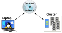

Conectándose a un sistema HPC remoto
Última actualización: 2026-06-30 | Mejora esta página
Tiempo estimado: 35 minutos
Hoja de ruta
Preguntas
- ¿Cómo inicio sesión en un sistema HPC remoto?
Objetivos
- Configurar el acceso seguro a un sistema HPC remoto.
- Conectarse a un sistema HPC remoto.
Conexiones Seguras
El primer paso para usar un clúster es establecer una conexión desde nuestra laptop al clúster. Cuando estamos sentados frente a una computadora (o de pie, o sosteniéndola en nuestras manos o en nuestras muñecas), esperamos una pantalla visual con iconos, widgets y quizás algunas ventanas o aplicaciones: una interfaz gráfica de usuario, o GUI. Dado que los clústeres de computadoras son recursos remotos que se conectan a través de interfaces lentas o intermitentes (especialmente WiFi y VPN), es más práctico usar una interfaz de línea de comandos, o CLI, para enviar comandos como texto plano. Si un comando devuelve resultados, también se imprimen como texto plano. Los comandos que ejecutaremos hoy no abrirán una ventana para mostrar resultados gráficos.
Si alguna vez has abierto el Símbolo del Sistema (cmd)
de Windows o la Terminal de macOS, entonces has visto una CLI. Si has
tomado los cursos de The Carpentries sobre la Shell de UNIX o
Control de Versiones, tambien has usado la CLI en tu máquina
local extensamente. La diferencia es que ahora abrirás una CLI en
una máquina remota, tomando algunas precauciones para que otras
personas en la red no puedan ver (o cambiar) los comandos que estás
ejecutando o los resultados que la máquina remota envía de vuelta. Para
ello usaremos el protocolo Secure SHell (o SSH) para abrir una conexión
de red cifrada entre dos máquinas, lo que te permitirá enviar y recibir
texto y datos sin tener que preocuparte por ojos curiosos.

Los clientes SSH son generalmente herramientas de la línea de
comandos, donde proporcionas la dirección de la máquina remota como
único argumento obligatorio. Sin embargo, si el nombre de usuario en el
sistema remoto difiere del que usas localmente, también deberás
proporcionarlo. Si tu cliente SSH tiene una interfaz gráfica, como PuTTY
o MobaXterm, configurarás estos argumentos antes de hacer clic en
“conectar”. Desde la terminal, escribirás algo como
ssh userName@hostname, donde el argumento del comando es
parecido a una dirección de correo electrónico: el símbolo “@” se usa
para separar el nombre de usuario de la dirección de la máquina
remota.
Cuando inicias sesión en una laptop, tablet u otro dispositivo
personal, normalmente se requiere un nombre de usuario, contraseña o
patrón para evitar el acceso no autorizado. En estas situaciones, la
probabilidad de que alguien más intercepte tu contraseña es baja, ya que
registrar tus pulsaciones de teclas requiere una explotación maliciosa o
acceso físico. Para sistemas como login1 que ejecutan un
servidor SSH, cualquiera en la red puede iniciar sesión o intentarlo.
Dado que los nombres de usuario a menudo son públicos o fáciles de
adivinar, tu contraseña suele ser el eslabón más débil en la cadena de
seguridad. A modo de mejorar la seguridad, muchos clústeres prohíben el
inicio de sesión basado en contraseñas, requiriendo en su lugar que
generes y configures un par de claves públicas-privadas con una
contraseña mucho más fuerte. Incluso si tu clúster no lo requiere, la
siguiente sección te guiará a través del uso de claves SSH y un agente
SSH para fortalecer tu seguridad y facilitar el inicio de
sesión en sistemas remotos.
Mejor Seguridad con Claves SSH
En la sección de Configuración proporciona instrucciones de cómo instalar una aplicación de terminal con SSH. Si no lo has hecho aún, abre una terminal con una línea de comandos similar a Unix en tu sistema.
Las llaves SSH son un método alternativo de autenticación para obtener acceso a sistemas de computación remotos. También pueden usarse para autenticar la transferencia de archivos o para acceder a sistemas de control de versiones remotos (como GitHub). En esta sección crearás un par de claves SSH:
- una llave privada que guardas en tu propio computador, y
- una llave pública que puedes colocar en cualquier sistema remoto al que accedas.
Las llaves privadas son tu pasaporte digital seguro
Una llave privada que sea visible para cualquiera excepto tú debe considerarse comprometida, y debe ser destruida. Esto incluye tener permisos incorrectos en el directorio donde está almacenada (o una copia de él), atravesar cualquier red que no sea segura (cifrada), adjuntarla en correos electrónicos no cifrados, y hasta mostrarla en tu terminal.
Protege esta llave como si fuera la que abre la puerta principal de tu casa. En muchos sentidos, lo hace.
Independientemente del programa o sistema operativo que uses, por favor elige una contraseña corta o una larga fuerte que actúe como una capa de protección adicional para tu llave privada SSH.
Consideraciones para las Contraseñas de las Llaves SSH
Cuando se te solicite, introduce una contraseña segura que puedas recordar. Hay dos enfoques comunes para hacerlo:
- Crea una contraseña larga memorable con algunos signos de puntuación y sustituciones de números por letras, de 32 caracteres o más. Las direcciones de calle funcionan bien; solo ten cuidado con ataques de ingeniería social o registros públicos.
- Usa un gestor de contraseñas y su generador de contraseñas integrado con todas las clases de caracteres, de 25 caracteres o más. KeePass y BitWarden son dos buenas opciones.
- Nada es menos seguro que una llave privada sin contraseña. Si omitiste la entrada de contraseña por accidente, vuelve atrás y genera un nuevo par de llaves con una contraseña fuerte.
Llaves SSH en Linux, Mac, MobaXterm, y Windows Subsystem for Linux
Una vez que has abierto una terminal, comprueba si ya existen llaves SSH y sus nombres ya que las llaves existentes serán sobreescritas.
Si ~/.ssh/id_ed25519 ya existe, tendrás que especificar
un nombre diferente para el nuevo par de claves.
Genera un nuevo par de claves pública y privada utilizando el
siguiente comando, que producirá una clave más robusta que la
configuración predeterminada de ssh-keygen al emplear estas
opciones:
-
-a(valor predeterminado es 16): número de rondas de derivación de la contraseña; aumenta para ralentizar los ataques de fuerza bruta. -
-t(valor predeterminado es rsa): especifica el “tipo” o algoritmo criptográfico.ed25519especifica EdDSA con una clave de 256 bits; es más rápido que RSA con una fuerza comparable. -
-f(valor predeterminado es /home/user/.ssh/id_algorithm): nombre del archivo donde se almacenará tu llave privada. El nombre de la llave pública será idéntico, con la extensión.pubañadida.
Cuando se te solicite, introduce una contraseña segura con las consideraciones anteriores en mente. Ten en cuenta que la terminal no parecerá cambiar mientras escribes la contraseña: esto es intencional, por tu seguridad. Se te pedirá que la escribas nuevamente, así que no te preocupes demasiado por errores de escritura.
Echa un vistazo en ~/.ssh (usa ls ~/.ssh).
Deberías ver dos archivos nuevos:
- tu llave privada (
~/.ssh/id_ed25519): no la compartas con nadie! - la llave pública compartible (
~/.ssh/id_ed25519.pub): si un administrador del sistema te pide una llave, esta es la que debes enviar. Tambien es seguro subirla a sitios como GitHub: está pensada para ser vista.
Usa RSA para sistemas antiguos
Si la generacion de llaves falló porque ed25519 no está disponible, intenta usar el criptosistema RSA, auque es más antiguo aun es fuerte y confiable. De nuevo, primero verifica si ya existe una llave:
Si ~/.ssh/id_rsa ya existe, tendrás que elegir un nombre
distinto para el nuevo par de llaves. Genérala como arriba, con estas
opciones extra:
-
-bdefine el número de bits en la llave. El valor predeterminado es 2048. EdDSA usa una longitud fija, por lo que esta opción no tendría efecto. -
-o(sin valor predeterminado): usa el formato de llave OpenSSH, en lugar de PEM.
Cuando se te solicite, introduce una contraseña fuerte con las consideraciones anteriores en mente.
Echa un vistazo en ~/.ssh (usa ls ~/.ssh).
Deberías ver dos archivos nuevos:
- tu llave privada (
~/.ssh/id_rsa): no la compartas con nadie! - la llave pública compartible (
~/.ssh/id_rsa.pub): si un administrador del sistema te pide una llave, esta es la que debes enviar. Tambien es seguro subirla a sitios como GitHub: está pensada para ser vista.
Llaves SSH en PuTTY
Si usas PuTTY en Windows, descarga y utiliza puttygen
para generar el par de llaves. Consulta la documentación
de PuTTY para más detalles.
- Selecciona
EdDSAcomo tipo de llave. - Selecciona
255como tamaño o fuerza de llave. - Haz clic en el boton “Generate”.
- No necesitas introducir un comentario.
- Cuando se te solicite, introduce una contraseña fuerte con las consideraciones anteriores en mente.
- Guarda las llaves en una carpeta que otros usuarios del sistema no puedan leer.
Echa un vistazo en la carpeta que especificaste. Deberías ver dos archivos nuevos:
- tu llave privada (
id_ed25519): no la compartas con nadie! - la llave pública compartible (
id_ed25519.pub): si un administrador del sistema te pide una llave, esta es la que debes enviar. Tambien es seguro subirla a sitios como GitHub: está pensada para ser vista.
Agente SSH para un manejo mas sencillo de llaves
Una llave SSH es tan fuerte como la contraseña usada para desbloquearla, pero por otro lado, escribir una contraseña compleja cada vez que te conectas a una máquina es tedioso y se vuelve pesado muy rápido. Aquí es donde entra el Agente SSH.
Usando un Agente SSH, puedes escribir la contraseña de la llave privada una vez y luego el Agente la recuerda por cierto número de horas o hasta que cierres sesion. A menos que un actor malintencionado tenga acceso físico a tu máquina, esta herramienta mantiene tu contraseña segura y evita la molestia de ingresarla varias veces.
Solo recuerda tu contraseña, porque cuando expire en el Agente, tendrás que escribirla de nuevo.
Agentes SSH en Linux, macOS y Windows
Abre tu aplicación de terminal y comprueba si hay un agente ejecutándose:
-
Si obtienes un error como este,
ERROR
Error connecting to agent: No such file or directory… entonces necesitas iniciar el agente de la siguiente forma:
AvisoQue hay en un
$(...)?La sintaxis de este comando de Agente SSH es inusual, según lo visto en la lección de Shell de UNIX. Esto se debe a que el comando
ssh-agentcrea una conexión a la que solo tú tienes acceso e imprime una serie de comandos de shell que pueden usarse para alcanzarla, pero no los ejecuta!SALIDA
SSH_AUTH_SOCK=/tmp/ssh-Zvvga2Y8kQZN/agent.131521; export SSH_AUTH_SOCK; SSH_AGENT_PID=131522; export SSH_AGENT_PID; echo Agent pid 131522;El comando
evalinterpreta esta salida de texto como comandos y te permite acceder a la conexión del Agente SSH que acabas de crear.Podrías ejecutar cada línea de la salida de
ssh-agentpor tu cuenta y lograrás el mismo resultado. Usarevalsolo lo hace más fácil. En caso contrario, si tu agente ya está ejecutándose: no lo modifiques.
Agrega tu llave al agente, con expiración de sesión después de 8 horas:
SALIDA
Enter passphrase for .ssh/id_ed25519:
Identity added: .ssh/id_ed25519
Lifetime set to 86400 secondsDurante ese periodo (8 horas), cada vez que uses esa llave, el Agente SSH la proporcionará por ti sin que tengas que teclear una sola vez.
Agente SSH en PuTTY
Si usas PuTTY en Windows, descarga y utiliza pageant
como agente SSH. Consulta la documentación
de PuTTY.
Transfiere tu Llave Pública
Visit https://mokey.cluster.hpc-carpentry.org
to upload your SSH public key. (Remember, it’s the one ending in
.pub!)
Inicia sesión en el cluster
Abre tu terminal o cliente SSH gráfico y luego inicia sesión en el
cluster. Reemplaza yourUsername con tu nombre de usuario o
el proporcionado por el equipo instructor.
Puede que se te pida la contraseña. Cuidado: los caracteres que
escribes tras el mensaje de contraseña no se muestran en la pantalla. La
salida normal volverá una vez que presiones Enter.
Puede que hayas notado que el prompt cambió cuando iniciaste sesión
en el sistema remoto usando la terminal (si iniciaste sesión con PuTTY
esto no aplica porque no ofrece una terminal local). Este cambio es
importante porque ayuda a distinguir en que sistema se ejecutaran los
comandos que escribes. Este cambio también es una pequeña complicación
que tendremos que manejar durante el taller. Lo que se muestra como
prompt (que normalmente termina en $) en la terminal cuando
está conectada al sistema local y al remoto suele ser diferente para
cada usuario. Aun así, necesitamos indicar en qué sistema se introducen
los comandos, por lo que adoptaremos la siguiente convención:
-
[you@laptop:~]$cuando el comando se introduce en una terminal conectada a tu computadora local -
[yourUsername@login1 ~]$cuando el comando se introduce en una terminal conectada al sistema remoto -
$cuando en realidad no importa a que sistema esté conectada la terminal.
Explorando tu directorio personal remoto
A menudo, muchas personas tienden a pensar en una instalación de
computación de alto rendimiento como una sola máquina gigante y mágica.
A veces, se asume que la computadora en la que iniciaron sesión es todo
el cluster. Entonces, ¿qué está pasando realmente?, ¿a qué computadora
nos conectamos? El nombre de la computadora actual se puede comprobar
con el comando hostname. (Puede que notes que el hostname
actual también forma parte de nuestro prompt.)
SALIDA
Así que definitivamente estamos en la máquina remota. Ahora,
averiguemos donde estamos ejecutando pwd para
printar el directorio de trabajo.
SALIDA
/home/yourUsername¡Genial, sabemos donde estamos! Veamos qué hay en nuestro directorio actual:
SALIDA
id_ed25519.pubLos administradores del sistema pueden haber configurado tu directorio personal con archivos, carpetas y enlaces (accesos directos) útiles a espacios reservados para ti en otros sistemas de archivos. Si no lo hicieron, tu directorio personal puede verse vacío. Para comprobarlo, incluye archivos ocultos en el listado:
SALIDA
. .bashrc id_ed25519.pub
.. .sshEn la primera columna, . es una referencia al directorio
actual y .. a su directorio padre (/home).
Puede que veas o no los otros archivos, o archivos similares:
.bashrc es un archivo de configuracion de la shell, que
puedes editar con tus preferencias; y .ssh es un directorio
que guarda llaves SSH y un registro de conexiones autorizadas.
Instala tu llave SSH
Puede haber una mejor forma
Las políticas y prácticas para manejar llaves SSH varían entre clústeres HPC: sigue las indicaciones proporcionadas por las personas administradoras o la documentación. En particular, si hay un portal en línea para gestionar llaves SSH, usa eso en lugar de las instrucciones aquí descritas.
Si transferiste tu llave pública SSH con scp, deberias
ver id_ed25519.pub en tu directorio personal. Para
“instalar” esta llave, debe estar listada en un archivo llamado
authorized_keys dentro de la carpeta .ssh.
Si la carpeta .ssh no apareció arriba, entonces aun no
existe: créala.
Ahora, usa cat para mostrar tu llave pública, pero
redirige la salida y añádela al archivo
authorized_keys:
¡Eso es todo! Desconéctate y luego intenta iniciar sesión de nuevo en el remoto: si tu llave y el agente se configuraron correctamente, no se te pedirá la contraseña de tu llave SSH.
- Un sistema HPC es un conjunto de máquinas conectadas en red.
- Los sistemas HPC normalmente proporcionan nodos de acceso y un conjunto de nodos de trabajo.
- Los recursos en nodos independientes (de trabajo) pueden variar en volumen y tipo (cantidad de RAM, arquitectura de procesador, disponibilidad de sistemas de archivos montados en red, etc.).
- Los archivos guardados en un nodo están disponibles en todos los nodos.